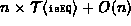

Data Structures and Algorithms
with Object-Oriented Design Patterns in Java
Data Structures and Algorithms
with Object-Oriented Design Patterns in Java
Program  defines two more methods
of the OrderedListAsArray class,
findPosition and get.
The findPosition method takes as its argument
a Comparable object.
The purpose of this method is to search the ordered list
for an item which matches the object,
and to return its position in the form of an object that implements
the Cursor interface.
In this case, the result is an instance of the MyCursor inner class.
defines two more methods
of the OrderedListAsArray class,
findPosition and get.
The findPosition method takes as its argument
a Comparable object.
The purpose of this method is to search the ordered list
for an item which matches the object,
and to return its position in the form of an object that implements
the Cursor interface.
In this case, the result is an instance of the MyCursor inner class.
Program: OrderedListAsArray class findPosition and get methods.
The search algorithm used in findPosition is identical to that
used in the find method (Program ).
The findPosition uses the isEQ method to locate
a contained object which is equal to the search target.
Note that if no match is found,
the offset is set to the value count,
which is one position to the right of the last item in the ordered list.
The running time of findPosition is identical to that of
find: , where  .
.
The get method defined in Program
takes an int argument and returns the object
in the ordered list at the specified position.
In this case, the position is specified using
an integer-valued subscript expression.
The implementation of this method is trivial--it simply indexes into the array.
Assuming the specified offset is valid,
the running time of this method is O(1).
 Copyright © 1998 by Bruno R. Preiss, P.Eng. All rights reserved.
Copyright © 1998 by Bruno R. Preiss, P.Eng. All rights reserved.